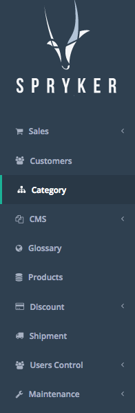
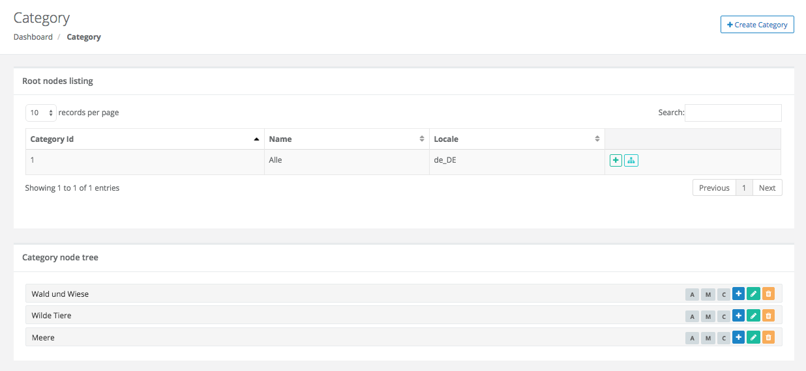
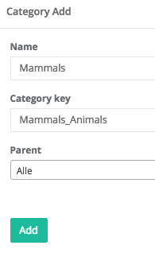
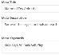
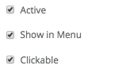
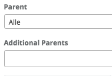
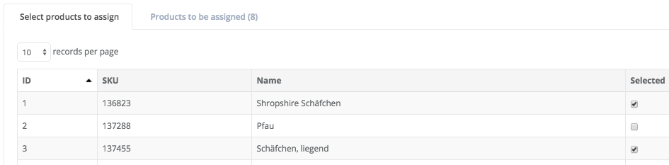
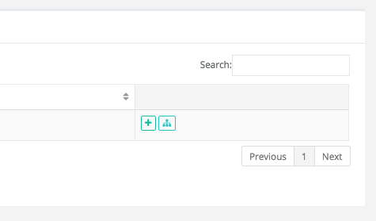
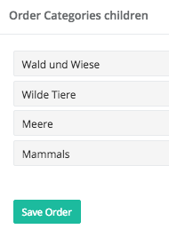

Category
used to be: http://spryker.github.io/store-administration/back-office-manuals/category/
A product category is a way to organize the products in your shop by the type of products you sell. The product categories can be created and update using the dedicated section in the back-office user interface.
Category assigning
A product can be assigned to one or more product categories.
Next, we will help you to create a new product category and show you how you can change the order of your product categories:
Creating a Product Category
Product Categories
A category can be set active/inactive, it can be shown in the menu from the shop and made clickable. More, meta information can be added to product categories.
| 1. |
From the left side navigation menu, select Category  |
| 2. |
Click on the Create Category button in the top right corner  |
| 3. |
Enter Name, Category Key, and Parent for your new product category The name that you enter in the form serves as an ID for the back-end and the name that will be displayed to the customer in the shop front-end is rendered with the help of the category key that you enter. Furthermore, the category key also enables you to render the category name that will be displayed in the shop front-end in different languages if needed (for more information on translations check our glossary manual). Hence, after creating a new category you need to go to the glossary and add the corresponding text for the category key. Finally, by selecting a parent category you can create a hierarchical category structure.  |
| 4. |
Enter Meta Information  |
Meta Information
Meta information is text that describes the product category. The text you enter as meta information will not be displayed on the front-end to the customer, but will be contained in the HTML of the category page. Their purpose is to improve search ranking in the search engines. When creating a new category, you can add a meta title, a meta description, and meta keywords.
| 5. | Manage Category Visibility There are three options for managing the visibility of your new category:
 |
|
6. |
Choose Additional Parents  |
| 7. | Select Products to Assign to Your New Category Finally, you can select the products to be assigned to your category. Therefore, you must check the checkbox in the right column of the products in the table that you want to add to your category. The selected products will appear in the table “Products to be assigned”, which is available on the second tab. In the same way that you can assign products to the category, you can also remove products from the category in the section below.  This is everything you need to do for creating a product category. Hit the Save button to complete the product category creation. The selected products will now be assigned to your new product category. |
Ordering Categories
| 1. |
From the left side navigation menu, select Category
|
| 2. |
Click on the green button from the column on the right side displaying a small sitemap  |
| 3. |
Change the order of the categories by drag&drop  |
This is everything you need to do for changing the order of your product categories. Hit the Save button to complete.